Przypisanie zakresu (scope) do kanału sprawia, że wiadomości wysyłane na tym kanale będą propagowane w sieci tylko przez te przekaźniki (repeatery), które posiadają w swojej konfiguracji dany region. Zapobiega to niepotrzebnemu zapychaniu całej sieci lokalnymi dyskusjami i gwarantuje, że wiadomości trafiają tam, gdzie mają największe znaczenie:
pl – zasięg ogólnopolski (np. kanał #polska, #sos).pl/ds lub pl/lb – zasięg wojewódzki (np. #dolnoslaskie, #lubuskie).pl/ds/wro – zasięg lokalny / miejski (np. #wroclaw, #wroc-tech).Otwórz aplikację Companion, przejdź do zakładki z kanałami i kliknij ikonę edycji (ołówek lub zębatka) przy wybranym kanale lub dodaj nowy kanał.
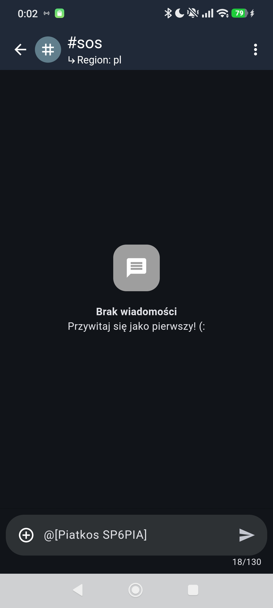
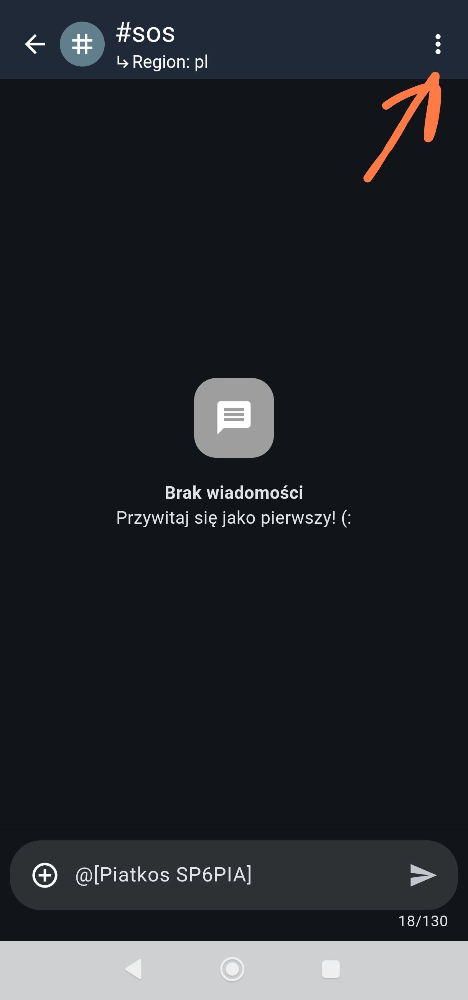
1) oraz zakresu regionalnegoW polu Region scope wpisz kod odpowiadający poziomowi terytorialnemu danego kanału. Poniżej przedstawiono przykłady dla kanału krajowego, wojewódzkiego oraz lokalnego:
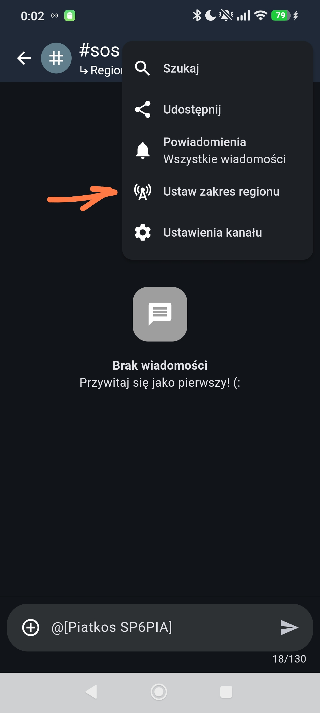
pl): Kanał #polska z zakresem pl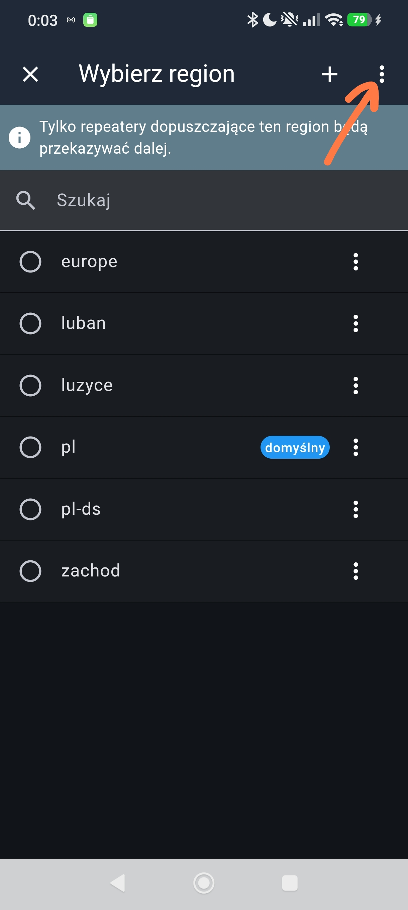
pl/ds): Kanał #dolnoslaskie z zakresem pl/ds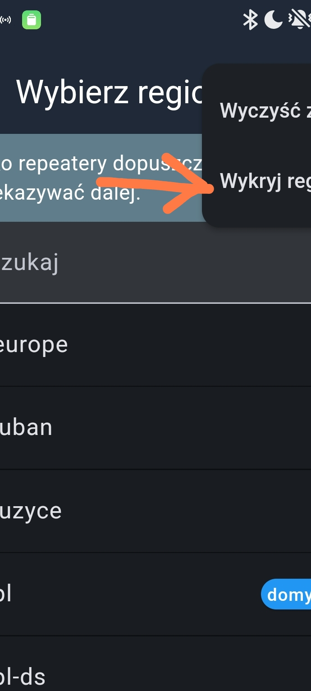
pl/ds/wro): Kanał #wroclaw z zakresem pl/ds/wro
Zakresy tworzą hierarchię terytorialną. Jeżeli wpisujesz zakresy wielopoziomowe, używaj ukośnika /, np. pl/ds dla Dolnego Śląska lub pl/ds/wro dla Wrocławia.
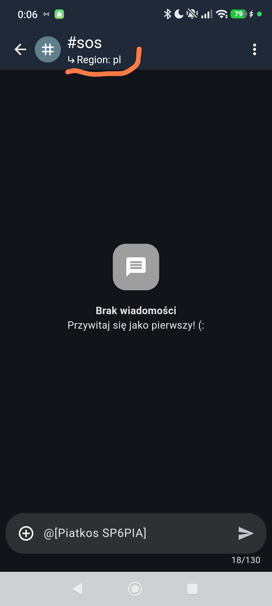
pl/ds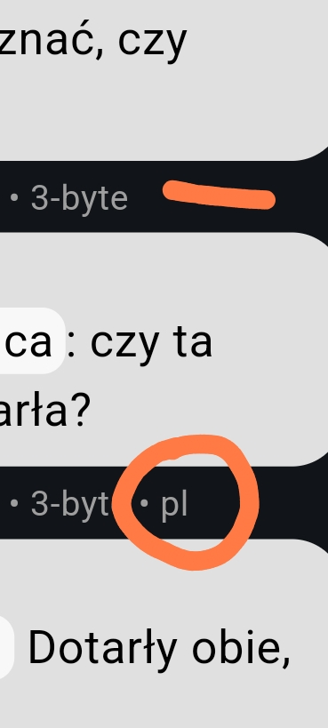
pl/ds/wro
Po zapisaniu kanału, po wejściu w okno czatu, pod nazwą kanału na górnym pasku pojawi się podgląd aktywnego zakresu (np. ↳ Region: pl). Daje to pewność, że wiadomości będą wysyłane z odpowiednim zakresem regionalnym.
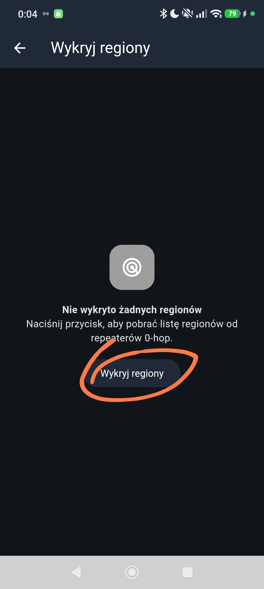
#polska z potwierdzonym ↳ Region: pl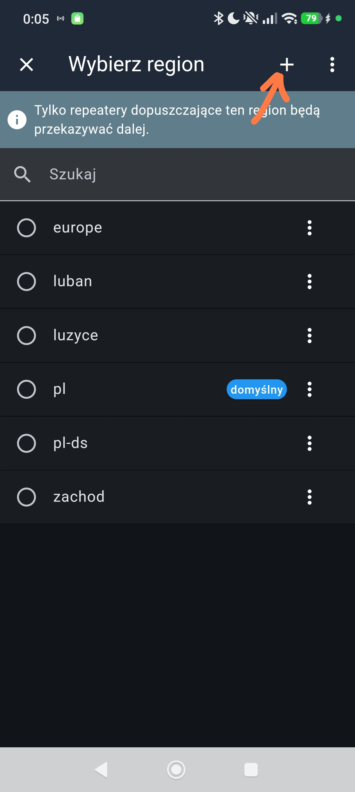
#sos z potwierdzonym ↳ Region: pl
Aby Twoje urządzenie domyślnie tworzyło pakiety przypisane do Polski (jeżeli kanał nie ma własnego nadpisania), przejdź do **Ustawienia główne → Network Settings** i ustaw pole **Domyślny zakres regionu** na pl.
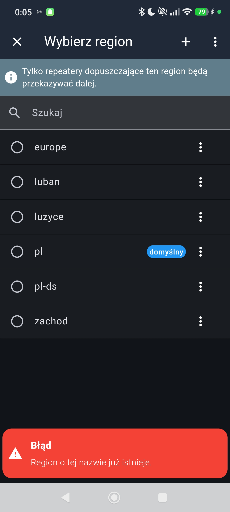
pl
Włączając w ustawieniach opcję Show Channel Messages Region Scopes, pod każdą odebraną i wysłaną wiadomością obok informacji o rozmiarze path hasha (np. 3-byte) pojawi się czytelny Znacznik Regionu (np. • pl).
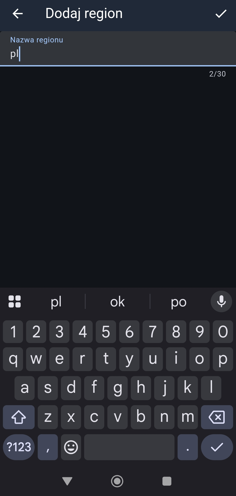
• pl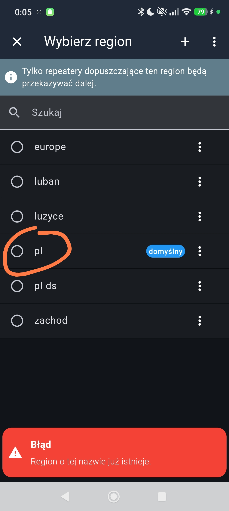
• pl przy komunikacie